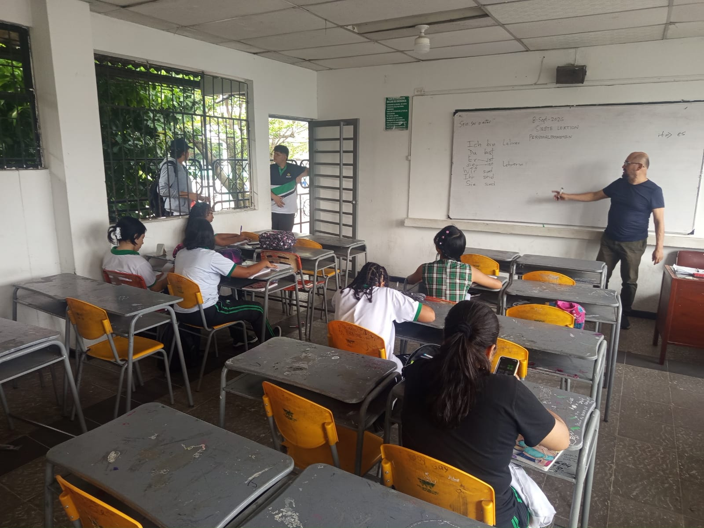
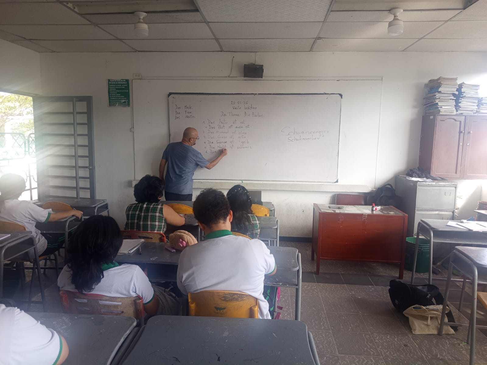
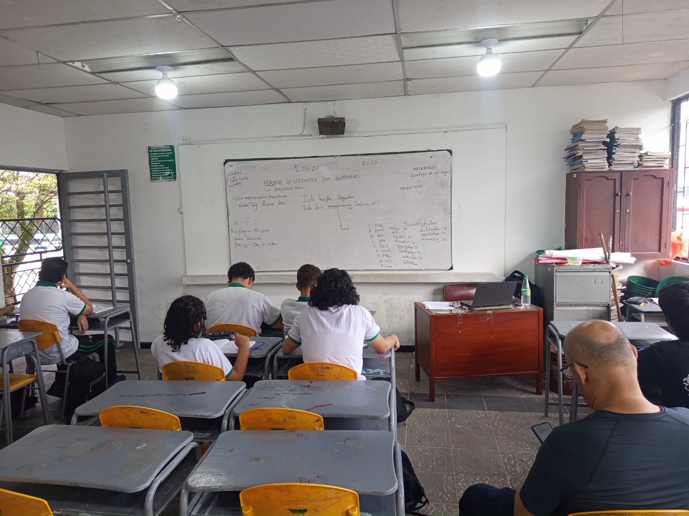
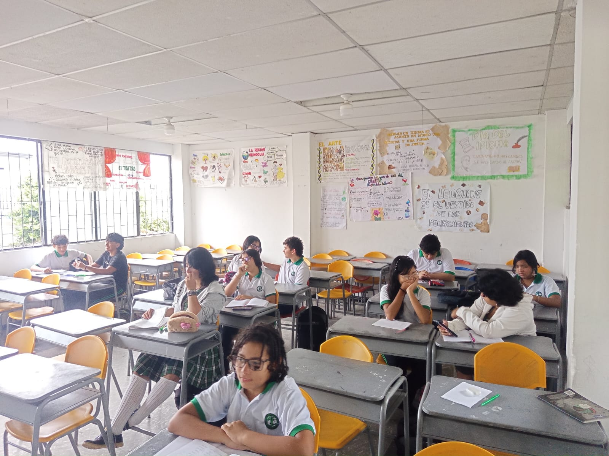

Aprende, habla y vive el idioma sin fronteras
Centro de Interés

Doble Mundo Alemán: Un espacio académico diseñado para introducir a los estudiantes en el fascinante mundo del idioma, la cultura y la fonética alemana de forma dinámica e interactiva.
Inmersión Lingüística: Nuestro objetivo principal es enseñar a los estudiantes las bases del idioma alemán, facilitando la comprensión de palabras y expresiones cotidianas para perder el miedo a hablar.


Dinámica de Clase: El profesor explica detalladamente palabras y frases clave. Posteriormente, ponemos el conocimiento en práctica preguntando sus significados y construyendo conversaciones cortas y sencillas.
Expresión Oral: Nos enfocamos fuertemente en aprender y corregir la pronunciación correcta mediante la repetición guiada, simulaciones y diálogos prácticos del día a día.

Coordinación y supervisión general de los Centros de Interés de la institución.
Líder pedagógico, encargado de impartir las clases, explicaciones y dinámicas de alemán.
Apoyo logístico, desarrollo tecnológico y dinamización de las actividades del centro.
Inscríbete al centro de interés, propón tus ideas o contacta a los responsables.